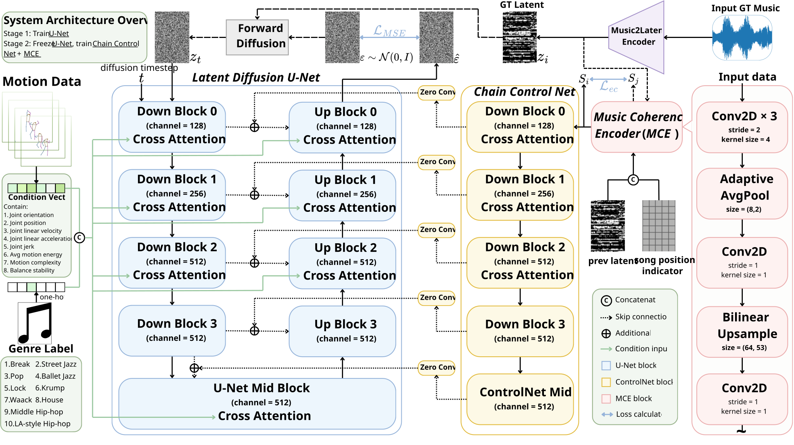
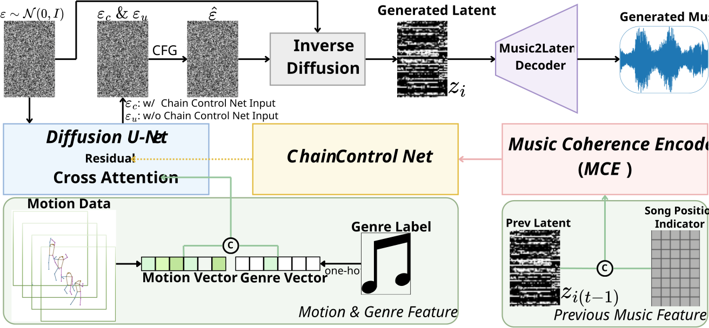

Existing motion-to-music methods either produce short fixed-length clips of only a few seconds, or generate longer sequences in a single shot from 2D motion or video. However, segment-level arbitrary-length generation from 3D motion introduces cross-segment coherence and trivial-copying challenges that remain underexplored. We propose a chain-generation framework with ChainControlNet (CCN) for 3D SMPL motion, which conditions the music latent of each segment on that of the preceding segment to preserve stylistic coherence over long durations; this segment-level design also naturally supports motion-driven extension and per-segment regeneration without re-synthesizing the whole song. To avoid trivial copying, we introduce three mechanisms: (1) a Music Coherence Encoder (MCE) that bottlenecks temporal details while preserving timbral characteristics; (2) Condition Dropout with Classifier-Free Guidance to improve diversity under motion conditioning; and (3) Hann crossfade for smooth transitions between adjacent segments. On AIST++, our method achieves the best short-clip performance (FAD 1.78, BeatHit 0.946) and the best long-form FAD of 4.39, outperforming all evaluated baselines.
Abstract
Per-clip Samples (5 seconds)
Each video shows a dance motion paired with generated music. Only one video plays at a time.
Full-Song Chain Generation
Compare coherence and diversity across methods. Listen for transitions at 5-second boundaries.
Note: DMD output volume has been normalized for fair comparison.
Spectrogram Comparison

Spectrogram comparison of chain-generated music (first 20 seconds, four 5s segments). White dashed lines mark segment boundaries. GT and Ours show smooth spectral transitions and consistent energy distribution. Baseline methods show boundary artifacts (DMD, CDCD) or inconsistent styles (TI, D2M-GAN).
Method Overview

Stage 1: UNet generates music latents conditioned on 3D SMPL motion features (514-D: 24 joints × 21-D descriptor + 10-D genre one-hot). Stage 2: ChainControlNet (CCN) injects 2-channel conditions into the frozen UNet — ch0: previous segment latent compressed by the Music Coherence Encoder (MCE, an asymmetric information bottleneck), ch1: Song Position Indicator. Stage 2 is trained with diffusion loss plus an MSE embedding consistency loss on the MCE bottleneck.
Inference Pipeline

For each segment i ≥ 1, the previous latent zi-1 is compressed by MCE and concatenated with the Song Position Indicator as a 2-channel CCN condition. Each DDIM denoising step computes a conditional prediction εc (with CCN residuals) and an unconditional prediction εu (without), combined via CFG: ε̂ = εu + s·(εc − εu), s = 1.2. The decoded 5-second segments are concatenated with a 300 ms Hann crossfade.
Experimental Results
Per-Clip Evaluation (5 second)
MOS is the mean over the three user-study dimensions (Quality, Alignment, Overall).
| Method | BeatHit ↑ | BAS ↑ | FAD ↓ | KLD ↓ | MOS ↑ |
|---|---|---|---|---|---|
| D2M-GAN [ECCV'22] | 0.868 | 0.202 | 3.95 | 2.80 | 3.18 |
| CDCD [ICLR'23] | 0.767 | --- | 10.75 | 6.27 | 3.16 |
| DMD [SA'23 TC] | 0.890 | 0.207 | 5.17 | 3.65 | 3.06 |
| TI [SA'24] | 0.629 | 0.196 | 3.18 | 2.76 | 2.60 |
| Ours | 0.946 | 0.206 | 1.78 | 2.37 | 3.84 |
Full-Song Chain Evaluation
All per-clip baselines are extended to full songs via the same Hann crossfade protocol. MOS is the mean over five dimensions (Quality, Alignment, Coherence, Transition, Overall). LORIS† is evaluated on the LORIS AIST++ subset and reported on the same scale; its row is excluded from ranking.
| Method | BeatHit ↑ | FAD ↓ | BdyLSD ↓ | MOS ↑ |
|---|---|---|---|---|
| D2M-GAN [ECCV'22] | 0.784 | 6.28 | 6.41 | 2.76 |
| CDCD [ICLR'23] | 0.759 | 11.98 | 14.49 | 3.00 |
| DMD [SA'23 TC] | 0.864 | 7.71 | 9.31 | 2.67 |
| LORIS† [ICML'23] | 0.790 | 21.97 | 4.43 | 2.89 |
| TI [SA'24] | 0.565 | 15.27 | 7.54 | 2.61 |
| Ours | 0.873 | 4.39 | 5.87 | 3.39 |
Ablation Study (Full-Song Chain)
Blocks (a)(b)(c) progressively develop the final configuration; block (d) verifies, under the Final setting, that both CCN and MCE are jointly necessary. ★ marks the configuration adopted in the final model.
| Configuration | BeatHit ↑ | FAD ↓ |
|---|---|---|
| (a) Bottleneck compression (fixed: MSE, no CD+CFG) | ||
| v1: vector (GAP, 26×) | 0.410 | 4.18 |
| v2: symmetric (4,4) | 0.693 | 4.95 |
| v2t: asymmetric (8,2) ★ | 0.725 | 4.56 |
| (b) Embedding loss (fixed: v2t, no CD+CFG) | ||
| No embedding loss | 0.703 | 4.71 |
| MSE (w = 0.1) ★ | 0.725 | 4.56 |
| (c) Condition Dropout + CFG (fixed: v2t + MSE) | ||
| Baseline | 0.725 | 4.56 |
| + CondDrop (pc = 0.2) | 0.803 | 4.65 |
| + CondDrop + CFG (s = 1.2) ★ | 0.873 | 4.39 |
| (d) Module ablation (fixed: Final = v2t + MSE + CD + CFG) | ||
| w/o CCN (UNet only) | 0.418 | 3.09 |
| w/o MCE (raw latent) | 0.728 | 4.57 |
| Full (CCN + MCE) ★ | 0.873 | 4.39 |
Note: w/o CCN attains a lower FAD but BeatHit collapses (0.418 vs. 0.873). Chain conditioning trades some audio-distribution closeness for a substantial gain in motion-music alignment; BeatHit is therefore the critical axis for evaluating chain generation.